AVDの保存場所を設定する
AVDを作成した時にシステムイメージやユーザーデータが保存されるディレクトリを変更する方法について解説します。AVDは非常にハードディスクの容量を必要とするため、デフォルトの保存場所からDドライブなどに移動したい場合に参照されてみてください。
環境変数「ANDROID_AVD_HOME」を設定する
AVDのデータが保存される場所は、Windows10の場合「C:¥Users¥(ユーザー名)¥.android¥avd」となっています。
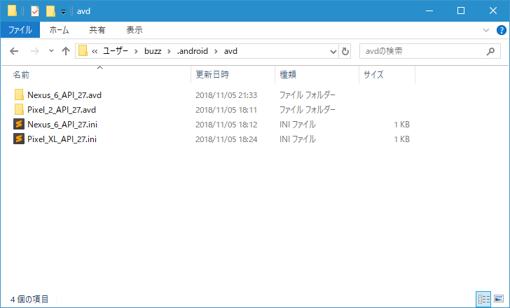
現在2つのAVDを作成しており、AVD毎に設定ファイルとディレクトリが作成されています。(設定ファイル名とディレクトリ名が違っているものがありますが、これは作成したAVDを編集して名前を変更したためです)
例えば「Nexus_6_API_27.avd」ディレクトリの中を見てみると、AVDのシステムイメージやユーザーデータなどが保存されています。
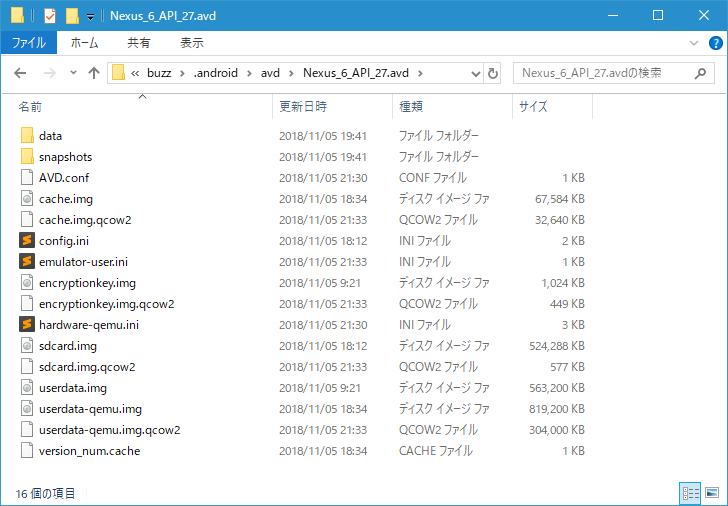
例えばハードディスクの容量の関係などで、別のドライブにAVDのデータを移したい場合、環境変数「ANDROID_AVD_HOME」にAVDの保存先ディレクトリを指定することで実現できます。
それでは実際に設定してみます。デスクトップ左下にあるスタートメニューをクリックし、表示されたアプリの一覧の「Windowsシステムツール」をクリックします。展開された一覧の中から「コントールパネル」をクリックしてください。
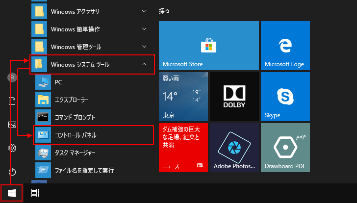
「コントロールパネル」が表示されたら「システムとセキュリティ」をクリックして下さい。
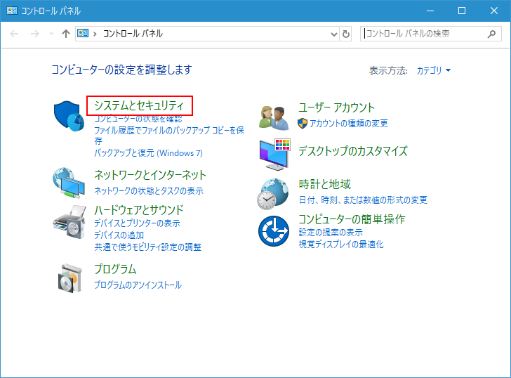
「システムとセキュリティ」の画面で「システム」をクリックして下さい。
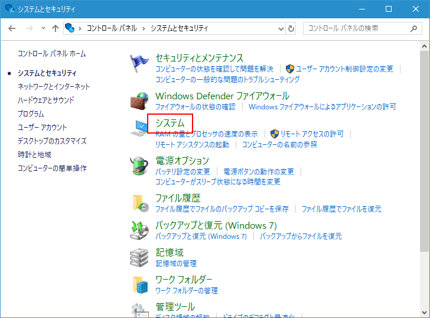
「システム」画面で左側メニューの中の「システムの詳細設定」をクリックして下さい。
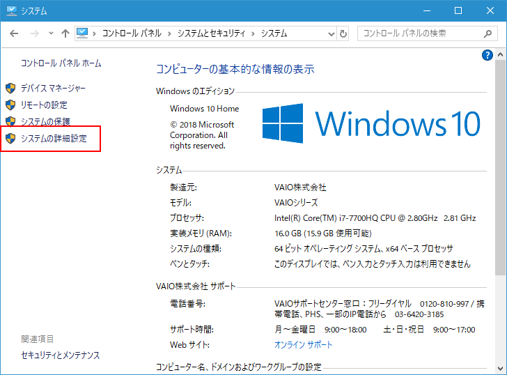
「システムのプロパティ」画面が表示されます。「環境変数」をクリックして下さい。
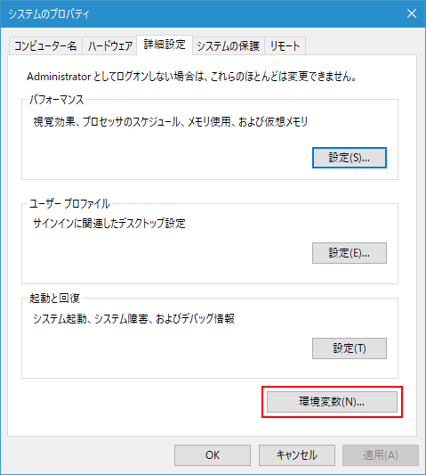
「環境変数」の画面が表示されます。この画面で環境変数の設定を行います。
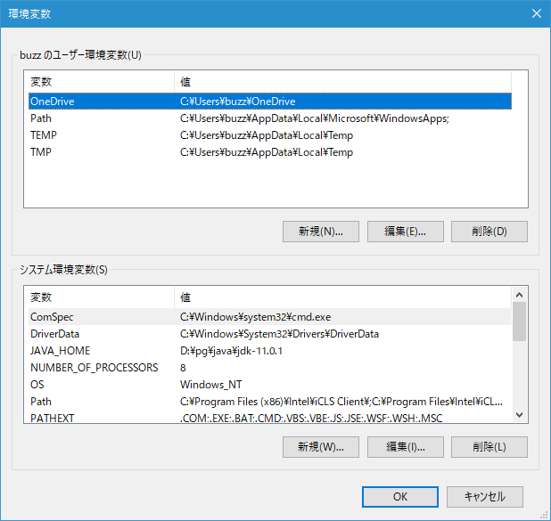
システム環境変数の方にある「新規」をクリックしてください。
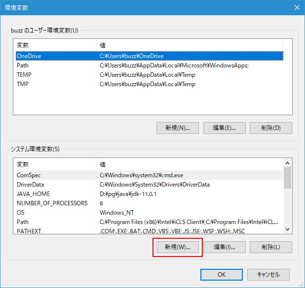
変数名に「ANDROID_AVD_HOME」、変数値にAVDの新しい保存先のディレクトリを指定します。今回は「D:¥android」を指定しました。入力が終わりましたら「OK」をクリックしてください。
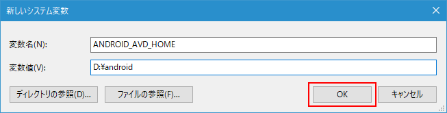
環境変数「ANDROID_AVD_HOME」が登録されました。「OK」をクリックして画面を閉じておいてください。
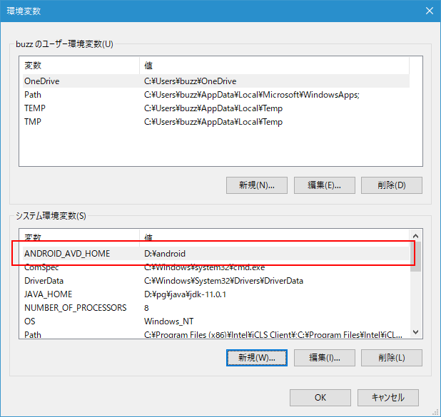
新しく作成したAVDが新しいディレクトリに保存されることを確認する
それではAndroid Studioを起動してください。
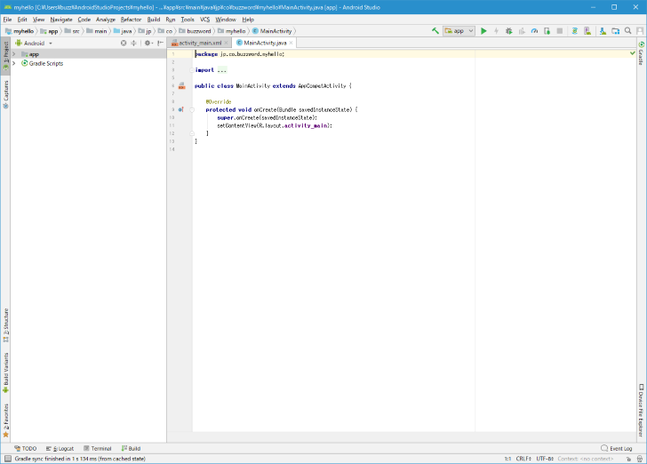
画面右上の次のアイコンをクリックしてください。
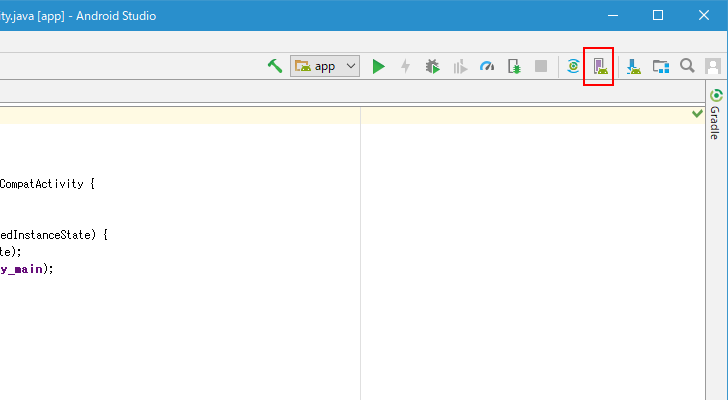
AVD Managerが起動します。既にAVDを2つ作成していたはずですが、新しい保存先へ今までのAVDのデータを移動していないためにAVDが作成されていない状態となっています。
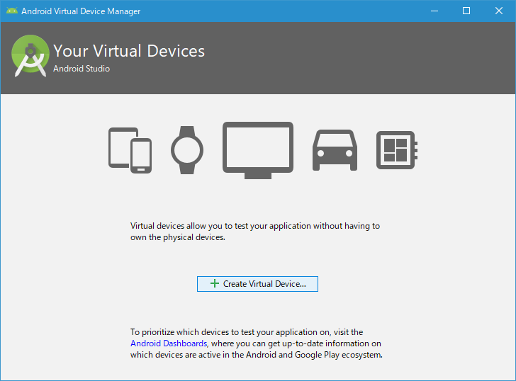
新しいAVDを作成します。AVDの作成手順は「AVD ManagerからAVD(仮想デバイス)を作成する」を参照されてください。
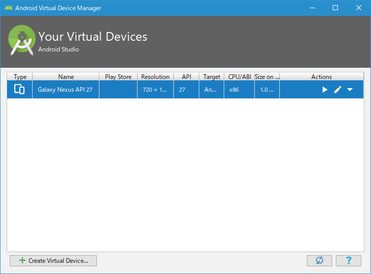
それではAVDの新しい保存先ディレクトリを見てみください。
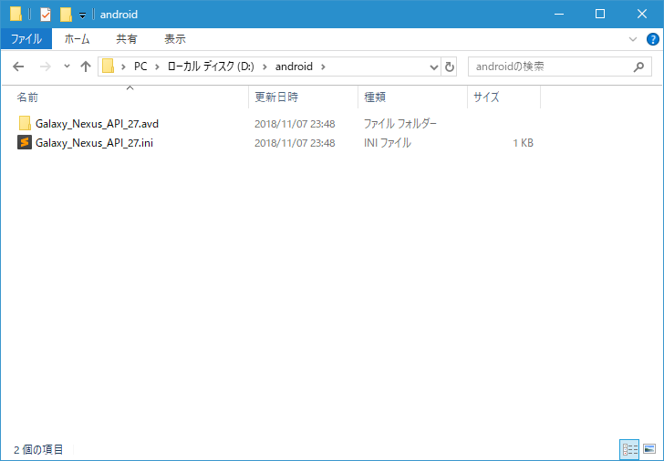
先ほど作成したAVDのデータが新しいAVDの保存先ディレクトリに作成されていることが確認できました。
変更前に作成したAVDを新しい保存先へ移動する
AVDの保存先を変更する前に作成済のAVD、新しい保存先へ移動することで再び利用することができます。最初に変更前のディレクトリにあるファイルやディレクトリを新しい保存先へ移動します。
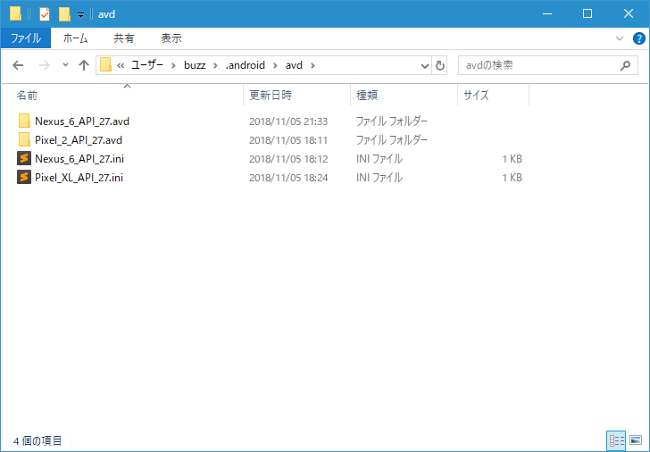
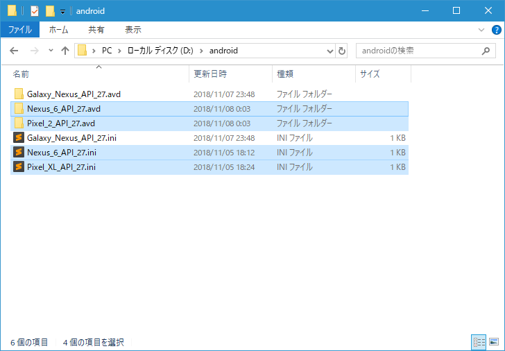
次に移動したファイルの中の「Nexus_6_API_27.ini」をテキストエディタで開いてください。(複数のAVDを移動した場合は、AVDの数だけ「(AVD名).ini」ファイルがありますのでそれぞれこのあとの変更作業を行ってください)
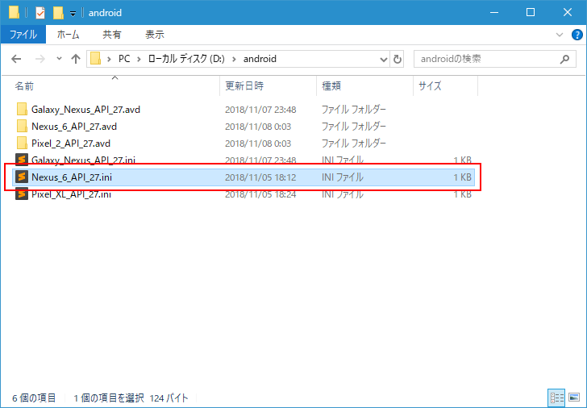
「path=」のあとにAVDのシステムイメージなどが格納されているディレクトリが指定されています。
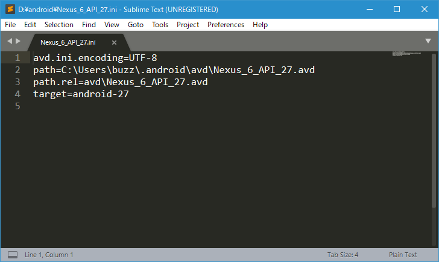
新しいディレクトリに変更してください。今回は次のように変更しました。変更が終わりましたら保存してファイルを閉じてください。
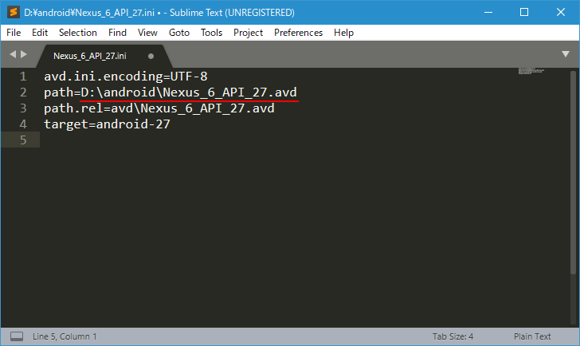
2つAVDを移動したので、もう一つ「Pixel_XL_API_27.ini」についても同じように「path=」の値を変更しておきました。
それでは改めてAndroid Studioを起動し、続いてAVD Managerを起動してください。
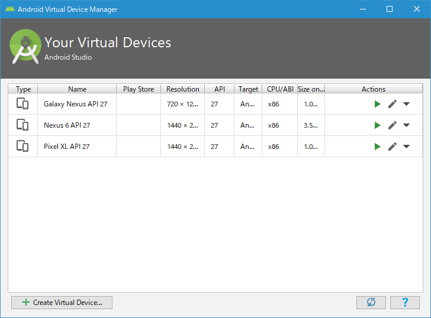
新しく作成したAVDに加えて、もともと作成していた2つのAVDが表示されています。
( Written by Tatsuo Ikura )

著者 / TATSUO IKURA
初心者～中級者の方を対象としたプログラミング方法や開発環境の構築の解説を行うサイトの運営を行っています。